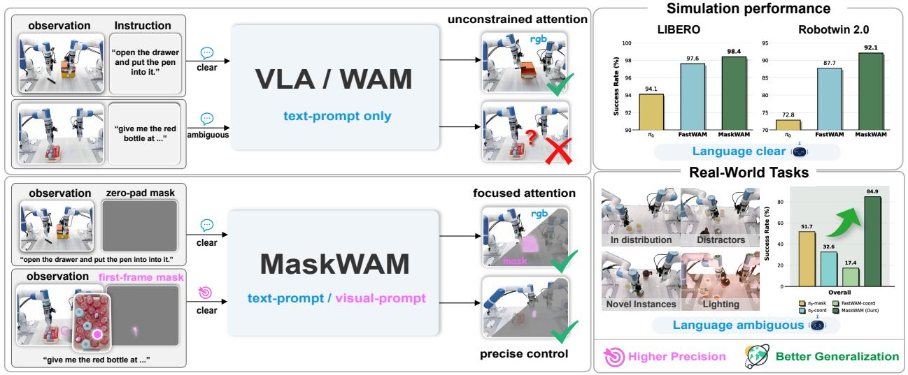

Figureure 2 · MaskWAM architectureFigure 2 MaskWAM architecture. $( a )$ Training: Noisy RGB and mask latents are channel-concatenated and denoised by a unified DiT. The model jointly optimizes future RGB, future masks, and action chunking under a joint flow-matching framework with decoupled noise schedules $\tau _ { v }$ and $\tau _ { a } . \quad ( b )$ Attention mask: A block-wise causal attention mask enables unified RGB, mask, and action training. (c) Inference: Conditioned on optional first-frame masks to resolve spatial ambiguities, the model leverages KV-caching to efficiently generate actions from partially denoised latents.这张图概括 MaskWAM 的整体方法流程。阅读时先看模块之间传递的训练信号，再看作者如何把目标拆成可优化的子问题。

Figureure 1 · OverviewFigure 1 Overview. We introduce MaskWAM, an end-to-end WAM that unifies mask prompting and mask prediction, supporting both text prompts and visual prompts. MaskWAM achieves high-precision manipulation and strong generalization in both simulation and real-world tasks.这张图概括 MaskWAM 的整体方法流程。阅读时先看模块之间传递的训练信号，再看作者如何把目标拆成可优化的子问题。